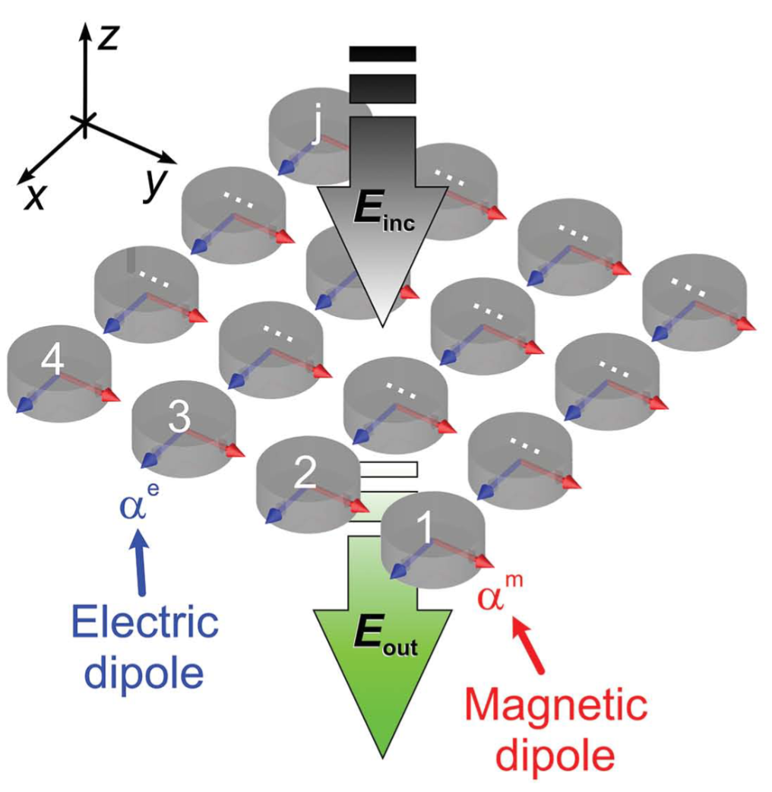
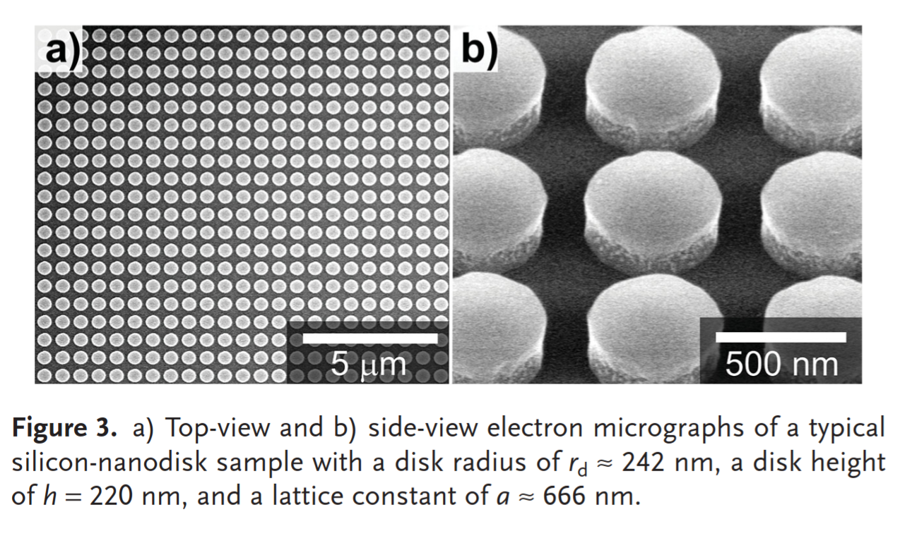
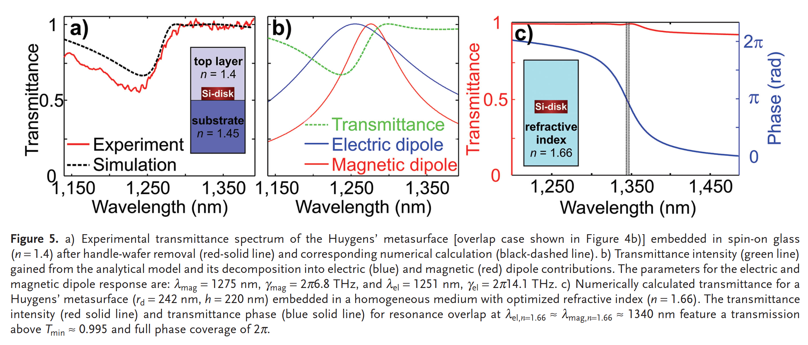
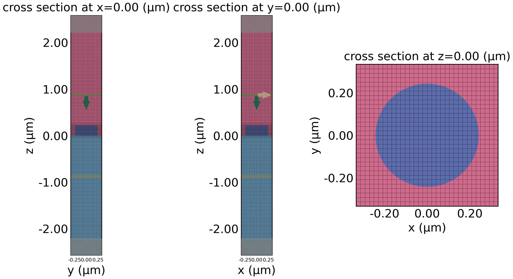
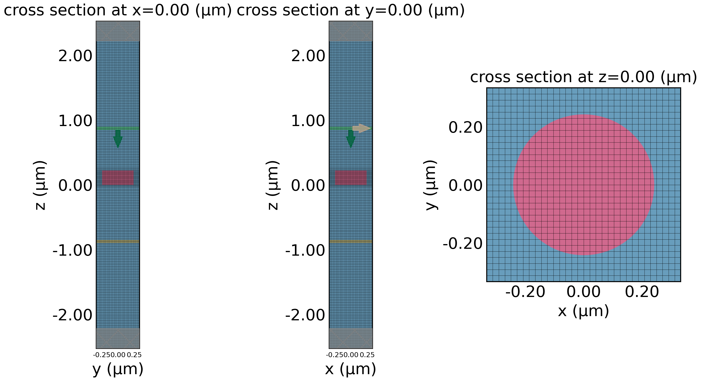
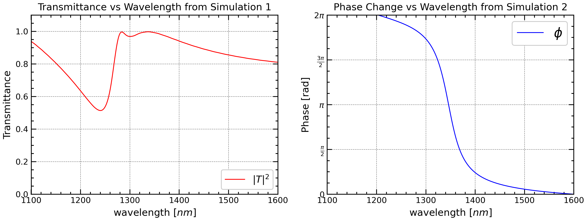

Simulating Huygens’ Surfaces
Yankun (Alex) Meng



In this notebook, the Huygens’ Metasurface figure 5(a) and 5(c) are reproduced, and mesh study is done for the transmittance. Link to Paper
Simulation Overview
For the transmittance and phase, two different background materials were used based in the paper, so two separate simulations were ran (with background medium as the only difference).
Note: Several other technical variables need to be changed. In tidy3D simulation, transmittance should be measured with td.FluxMonitor and phase should be measured with td.FieldMonitor. The run_time also needs to increase since the background medium has a higher refractive index in the second simulation than the first, so waves will travel more slowly.
Simulation 1
Top Layer n=1.4, Bottom Layer n=1.45
Simulation 2
Background medium n=1.66
Simulation Results
Mesh Study Results

Convergence of Transmittance
Initialization
Here we follow the seven steps of initialization I wrote down in the tutorial:
- Frequency Range Specification
- Computational Domain Size
- Grid Specifications (Discretization size)
- Structures and Materials
- Sources
- Monitors
- Run time
- Boundary Condition Specification
0 Frequency Range Specification
1 Computational Domain Size
2 Grid Resolution
Grid resolution is uniform grid in the horizontal direction with a yee cell length of \frac{P}{32} where P is the periodicity. In the vertical direction, AutoGrid means it’s non-uniform and adjusted based on the wavelength of the particular medium. Here, min_steps_per_wvl=32 means we are taking a minimum of 32 steps based on the wavelength, which will be shorter in the medium with a higher index of refraction.
3 Structures and Materials
Structures and Materials for the meta-atom
Background Medium for Figure 5(a) (n_1=1.4, n_2=1.45)
# Background medium for the first simulation
n_glass = 1.4
n_SiO2 = 1.45
glass = td.Medium(permittivity=n_glass**2, name='glass')
SiO2 = td.Medium(permittivity=n_SiO2**2, name='oxide')
substrate = td.Structure(
geometry=td.Box(
center=(0,0,-Lz/2),
size=(td.inf,td.inf,2 * (spc+h))
),
medium=SiO2,
name='substrate'
)
glass = td.Structure(
geometry=td.Box(
center=(0,0,Lz/2),
size=(td.inf,td.inf,2 * (spc+h))
),
medium=glass,
name='superstrate'
)Background Medium for Figure 5(c) (n=1.66)
4 The Source
The source is a simple Plane wave that traverses in the -z axis, placed \frac{\lambda_0}{2} distance above the metaatom in the computational domain. Polarization is along the x-axis, that’s what pol_angle=0 means.
5 Monitors
Monitor for Transmittance
Monitor for Phase
# We use FieldMonitor instead of DiffractionMonitor because
# DiffractionMonitor only gives you amplitudes of diffraction orders,
# losing phase detail if you care about continuous phase.
field_monitor = td.FieldMonitor(
center=(0, 0, -Lz/2 + spc - 0.5 * lda0),
size=(td.inf, td.inf, 0),
fields=["Ex"],
freqs=fr.freqs(N),
name="field_monitor"
)6 Run Time
7 Boundary Conditions
We apply PML in the +Z and -Z surfaces.
Helper Function for simulation
Since we have to run simulation two times, it is convenient to abstract out what are the differences to the two simulations and make defining simulations easier. Always follow the DRY Principle.
def simulation_helper(background, monitors, run_time):
"""
Create normalization and actual tidy3d simulations, visualize geometry,
and return both as a dictionary.
Parameters
----------
background : list of td.Structure
Background structures (without the cylinder).
monitors : list of td.Monitor
Monitors for the normalization run.
run_time : float
Run time for the normalization simulation.
Returns
-------
dict
{"norm": Simulation without cylinder,
"actual": Simulation with cylinder}
Notes
-----
Saves cross-sectional plots of the actual simulation (x=0, y=0, z=0)
with grid overlay for verification.
"""
sim_empty=td.Simulation(
size=sim_size,
grid_spec=grid_spec,
structures=background,
sources=[source],
monitors=monitors,
run_time=run_time,
boundary_spec=bc
)
background.append(cylinder)
sim_actual = td.Simulation(
size=sim_size,
grid_spec=grid_spec,
structures=background,
sources=[source],
monitors=monitors,
run_time=run_time,
boundary_spec=bc
)
# Always visualize simulation before running
fig, (ax1,ax2,ax3) = plt.subplots(1, 3, figsize=(12, 6))
ax1.tick_params(axis='x', labelsize=7)
ax2.tick_params(axis='x', labelsize=7)
sim_actual.plot(x=0, ax=ax1)
sim_actual.plot_grid(x=0, ax=ax1)
sim_actual.plot(y=0, ax=ax2)
sim_actual.plot_grid(y=0, ax=ax2)
sim_actual.plot(z=0, ax=ax3)
sim_actual.plot_grid(z=0, ax=ax3)
plt.savefig(f'huygens_structure_{background[0].name}.png', dpi=300)
plt.show()
sims = {
"norm": sim_empty,
"actual": sim_actual,
}
return sims
Transmittance Simulation
02:20:56 EDT Started working on Batch containing 2 tasks.
02:20:57 EDT Maximum FlexCredit cost: 0.050 for the whole batch.
Use 'Batch.real_cost()' to get the billed FlexCredit cost after the Batch has completed.
02:20:58 EDT Batch complete.
Transmittance Results

Phase Simulation

02:21:11 EDT Started working on Batch containing 2 tasks.
02:21:13 EDT Maximum FlexCredit cost: 0.050 for the whole batch.
Use 'Batch.real_cost()' to get the billed FlexCredit cost after the Batch has completed.
02:21:14 EDT Batch complete.
Phase Results
# 1. Compute average over the xy-plane
Ex_avg = np.mean(Ex[:, :, 0, :], axis=(0,1))
# 2. Compute phase
phase_avg = np.angle(Ex_avg)
# 3. Unwrap phase to remove ±pi jumps
phase_avg_unwrapped = np.unwrap(phase_avg)
# 4. Make relative to first point (optional)
phase_rel = phase_avg_unwrapped - phase_avg_unwrapped[0]
phase_actual = np.unwrap(np.angle(np.mean(Ex_actual[:, :, 0, :], axis=(0,1))))
phase_norm = np.unwrap(np.angle(np.mean(Ex_norm[:, :, 0, :], axis=(0,1))))fig, ax = plt.subplots(1, 1, figsize=(6, 4.5))
plt.plot(td.C_0 / fr.freqs(N) * 1000, phase_rel, "r", lw=1, label="$\phi$")
plt.plot(td.C_0 / fr.freqs(N) * 1000, phase_actual, "b", lw=1, label="Actual $\phi$")
plt.plot(td.C_0 / fr.freqs(N) * 1000, phase_norm, "g", lw=1, label="Norm $\phi$")
plt.xlabel(r"wavelength ($nm$)")
plt.ylabel("Phase")
plt.legend()
plt.show()Final Plotting
fig, axes = plt.subplots(1, 2, figsize=(12, 4))
# work on the first figure
ax = axes[0]
ax.tick_params(axis="both", labelsize=10)
ax.plot(td.C_0 / fr.freqs(N) * 1000, np.abs(T)**2, "r", lw=1, label="$|T|^2$")
ax.set_xlabel(r"wavelength [$nm$]", fontsize=12)
ax.set_ylabel("Transmittance", fontsize=12)
ax.set_title("Transmittance vs Wavelength from Simulation 1", fontsize=12)
ax.set_xlim(1100, 1600)
ax.set_ylim(0, 1.1)
ax.legend(loc="lower right", fontsize=12)
# work on the second figure
ax = axes[1]
ax.tick_params(axis="both", labelsize=10)
ax.plot(td.C_0 / fr.freqs(N) * 1000, phase_rel, "b", lw=1, label="$\phi$")
ax.set_xlabel(r"wavelength [$nm$]", fontsize=12)
ax.set_ylabel("Phase [rad]", fontsize=12)
ax.set_title("Phase Change vs Wavelength from Simulation 2", fontsize=12)
ax.set_xlim(1100, 1600)
ax.set_ylim(0, np.pi*2)
yticks = [0, np.pi/2, np.pi, 3*np.pi/2, 2*np.pi]
ytick_labels = [r"$0$", r"$\frac{\pi}{2}$", r"$\pi$",
r"$\frac{3\pi}{2}$", r"$2\pi$"]
ax.set_yticks(yticks)
ax.set_yticklabels(ytick_labels)
ax.legend()
plt.savefig("huygens.png", dpi=300)Mesh Study
Here, we set out to study the effect of different yee cell length on the transmittance.
# for each dl in dls
for i, dl in enumerate(dls):
# 2 Grid Specifications
horizontal_grid = td.UniformGrid(dl=dl)
vertical_grid = td.AutoGrid(min_steps_per_wvl=32)
grid_spec=td.GridSpec(
grid_x=horizontal_grid,
grid_y=horizontal_grid,
grid_z=vertical_grid,
)
# 4 Sources
source = td.PlaneWave(
source_time=fr.to_gaussian_pulse(),
size=(td.inf, td.inf, 0),
center=(0, 0, Lz/2 - spc + 2 * dl),
direction="-",
pol_angle=0
)
# 5 Monitor
monitor = td.FluxMonitor(
center=(0, 0, -Lz/2 + spc - 2*dl),
size=(td.inf, td.inf, 0),
freqs=fr.freqs(N),
name="flux"
)
sim_empty=td.Simulation(
size=sim_size,
grid_spec=grid_spec,
structures=[substrate, glass],
sources=[source],
monitors=[monitor],
run_time=run_time_short,
boundary_spec=bc
)
sim_actual = td.Simulation(
size=sim_size,
grid_spec=grid_spec,
structures=[substrate, glass, cylinder],
sources=[source],
monitors=[monitor],
run_time=run_time_short,
boundary_spec=bc
)
sims[f"norm{i}"] = sim_empty
sims[f"actual{i}"] = sim_actual dict_keys(['norm0', 'actual0', 'norm1', 'actual1', 'norm2', 'actual2', 'norm3', 'actual3', 'norm4', 'actual4', 'norm5', 'actual5', 'norm6', 'actual6'])02:21:47 EDT Started working on Batch containing 14 tasks.
02:21:59 EDT Maximum FlexCredit cost: 0.392 for the whole batch.
Use 'Batch.real_cost()' to get the billed FlexCredit cost after the Batch has completed.
02:22:21 EDT Batch complete.
Mesh Study Results
# Plot results
plt.figure(figsize=(10, 5))
for i, T in enumerate(Ts):
plt.plot(x, np.abs(T)**2, "-",lw=1, label=f"dl={dls[i] * 1000:.1f} nm")
plt.xlabel(r"Wavelength [$nm$]", fontsize=12)
plt.ylabel(r"$|T|^2$", fontsize=12)
plt.xlim(1100, 1600)
plt.ylim(-0.1, 1.1)
plt.legend(fontsize=12)
plt.tick_params(axis='both', labelsize=10) # change tick label size to 10
plt.title("Transmission Spectra with Different Mesh Sizes", fontsize=14)
plt.savefig("mesh_convergence.png", dpi=300)
plt.show()